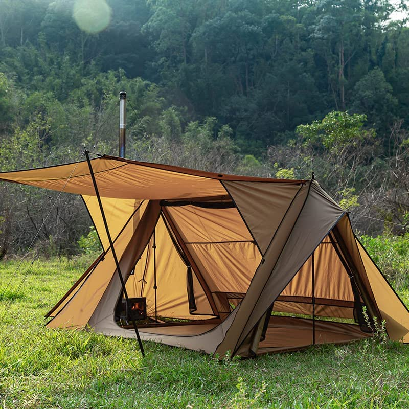
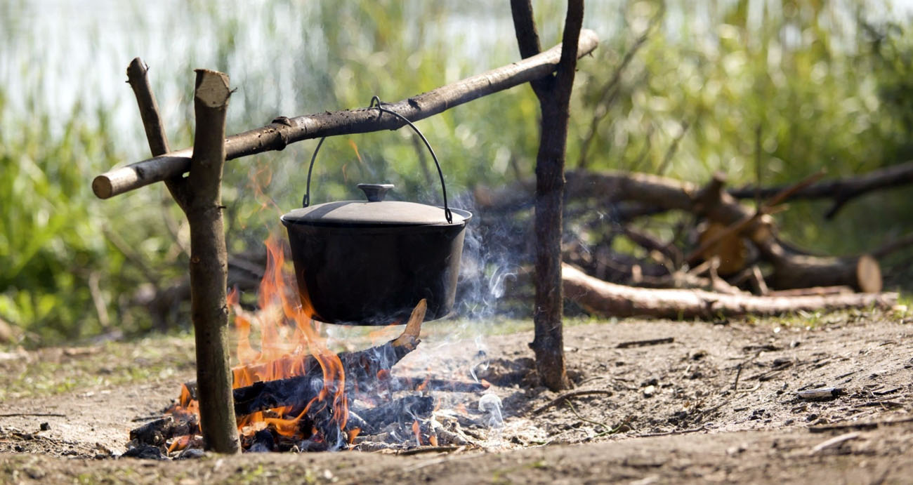

The 7 Most Essential Camping Gear
1. Camping Tent
The tent is easily the most essential camping gear for serious campers. You need to ensure that you are camping in a weather-resistant environment. The tent will help keep you warm during cold nights and shield you from any undesirable weather that might come your way.
You can find a variety of tents for different types of camping. For example, backpacking means carrying everything on your back, which includes the tent and sleeping bag with you as well. While this may sound like a difficult task, it actually comes down to the single most important thing you need in your backpacking gear. The tent is definitely the number one priority for backpacking tents.
If you do not have a tent, then you will have to use something else to sleep on when camping. A hammock or a tarp can both serve as your protection from potential rain and cold at night. This can keep you safe and protect your belongings.
The tent is also great, because it is usually waterproof. You have to be sure that the tent you are buying is able to keep the water out when it rains.

2. Sleeping Bag & Pads
Sleeping bags are another important gear that serious campers need. You want to ensure that you have a good sleeping bag that will keep you warm during the cold nights and help you stay comfortable. A good sleeping bag is also important because it will provide you with the protection from tough weather while camping, which is an essential part of the camping experience.
A sleeping bag will also help you be more comfortable when it comes to sleep, which can be crucial when spending long hours and days asleep on a hard ground. The good ones are usually insulated and keep you warm.
In addition to the sleeping bag, it is also important that you bring a set of pads with you when camping. Pads will help you keep your bones safe from injuries during the night especially if there is any chance of the ground being cold to sleep on. Make sure that the pad is waterproof, which is an essential part of camping gear for serious campers.
3. Cots and Mattresses
The best way to be comfortable when camping is to have a good sleeping and a good mattress. You can also use these items for off-site camping for a comfortable and comfy nights sleep.
A cot is most effective for backpacking, which means that you will be carrying it with you during your travels. This can really make things a lot easier if you are going on any off-trail hiking trips or camping in different locations. A cot is also a good way to camp at night, so you do not have to sleep on the ground.
A mattress is normally the last thing you would want to bring with you when camping. However, you can buy one of those compact mattresses that are designed specifically for backpacking and camping purposes. They are designed with a small sleeping pad attached to them and they come in sizes that fit most people's needs.
4. Campfire Cooking Equipment

With the right camping gear, you will not have to worry about how to cook your food outdoors. Campfire cooking equipment is essential when camping, which is one of the most fun ways to do it. You can cook a lot of things with a campfire and this can be especially useful when you go on fishing trips or hunting trips.
There are different types of campfire cooking equipment that you need for different needs. Some items like the pots and pans are designed for making a variety of food products, while others are specifically designed for willow cooking or a boiling method.
Make sure that you have the right camping cooking equipment before you head out to camp, because you will need it in order to ensure that your food is cooked just right.
The pot used to cook foods has to be stainless steel and light weight if you plan on going on any off-trail trails. This is because you will probably need to transport the food in your hands.
To know more about campfire cooking kit you can take a look at https://outdoorawaits.com/camping-gear/best-campfire-cooking-kits/
5. Backpack
The backpack is the essential camping gear for backpacking you need to bring out with you while camping. Backpacking consists of several different types of destinations, which will require different types of equipment. If you want to camp in a more remote location, then you will have to carry your own camping gear.
The backpack is especially important when hiking and backpacking off-trail routes. This kind of hiking means that the trails are not well marked and the paths are not marked very clearly as well. You will need to carry all of your equipment on your back, so it is important that you have the right backpack for the job.
6. Headlamp
A headlamp is an essential camping gear that you need to bring out with you when camping. Ideally, the headlamp should be powered by a single AAA flash-light battery. A headlamp can be used to light your campsite at night, when it gets pitch-black outside.
These devices are normally quite small and lightweight, so they are easy to use and transport when camping.
However, it is essential that you check the batteries before heading out on your adventure. You don't want to carry around a dead backup battery now will you?
You can also bring a flashlight with you when camping. Although this may not the most stylish camping gear, they are safe and effective to use in case of emergencies.
7. Camping Axe
The axe is a very important tool for camping. It is essential for cutting branches, trees and other objects that you need for the campfire at night. For example, branches can be used for building a fire pit, which will be useful in order to keep warm at night.
If you are going on a trip with your family members, then it is best that they take part in the chopping process instead of leaving it to you. This will make the experience more fun instead of actually being difficult and stressful.
The axe is also used for cutting down trees, which can be useful when building a shelter or backpacking shelter.
Final words
Camping is a great trip for everyone to do. It will provide you with great experiences and it is even more fun if you bring out camping gear with you to use. If you have the wrong camping equipment, then the experience may not be as good as it could be.
When planning your next trip, make sure that you do some research first before heading out. Being prepared before leaving is important when camping, because there are many other things that can go wrong during a night of camping that you may regret not preparing for.